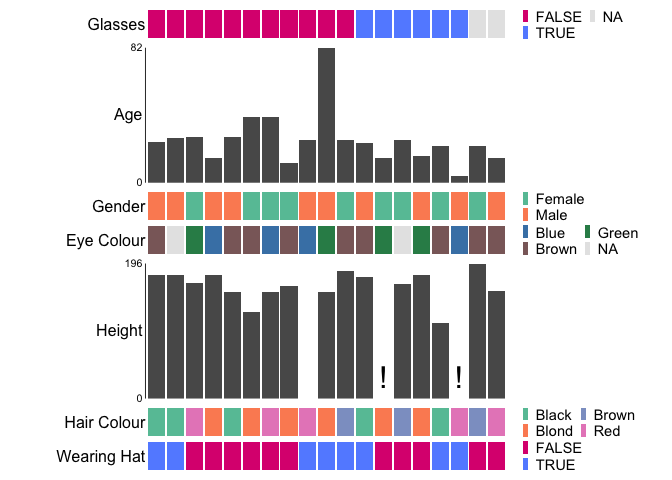
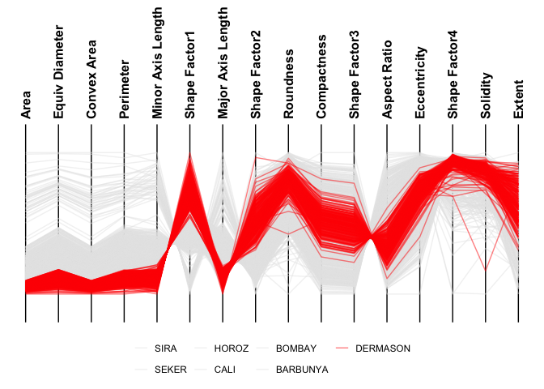

ggEDA streamlines exploratory data analysis by providing turnkey approaches to visualising n-dimensional data which can graphically reveal correlative or associative relationships between two or more features:
- ggstack: tiled one-dimensional visualisations that more effectively show missingness and complex categorical relationships in smaller datasets.
- ggparallel: parallel coordinate plots (PCPs) for examining large datasets with mostly quantitative features.
Installation
install.packages("ggEDA")Development Version
You can install the development version of ggEDA from GitHub with:
if (!require("remotes"))
install.packages("remotes")
remotes::install_github("CCICB/ggEDA")Or from R-universe with:
install.packages("ggEDA", repos = "https://ropensci.r-universe.dev")Quick Start
For examples of interactive EDA plots see the ggEDA gallery
# Load library
library(ggEDA)
# Plot data, sort by Glasses
ggstack(
baseballfans,
col_id = "ID",
col_sort = "Glasses",
interactive = FALSE,
verbose = FALSE,
options = ggstack_options(legend_nrow = 2)
)
Customise Colours
Customise colours by supplying a named list to the palettes argument
ggstack(
baseballfans,
col_id = "ID",
col_sort = "Glasses",
palettes = list("EyeColour" = c(
Brown = "rosybrown4",
Blue = "steelblue",
Green = "seagreen"
)),
interactive = FALSE,
verbose = FALSE,
options = ggstack_options(legend_nrow = 2)
)
Parallel Coordinate Plots
For datasets with many observations and mostly numeric features, parallel coordinate plots may be more appropriate.
ggparallel(
data = minibeans,
col_colour = "Class",
order_columns_by = "auto",
interactive = FALSE
)
#> ℹ Ordering columns based on mutual information with [Class]
ggparallel(
data = minibeans,
col_colour = "Class",
highlight = "DERMASON",
order_columns_by = "auto",
interactive = FALSE
)
#> ℹ Ordering columns based on how well they differentiate 1 group from the rest [DERMASON] (based on mutual information)
ggparallel(
data = minibeans,
order_columns_by = "auto",
interactive = FALSE
)
#> ℹ To add colour to plot set `col_colour` to one of: Class
#> ℹ Ordering columns to minimise crossings
#> ℹ Choosing axis order via repetitive nearest neighbour with two-opt refinement
Community Contributions
All types of contributions are encouraged and valued. See our guide to community contributions for different ways to help.